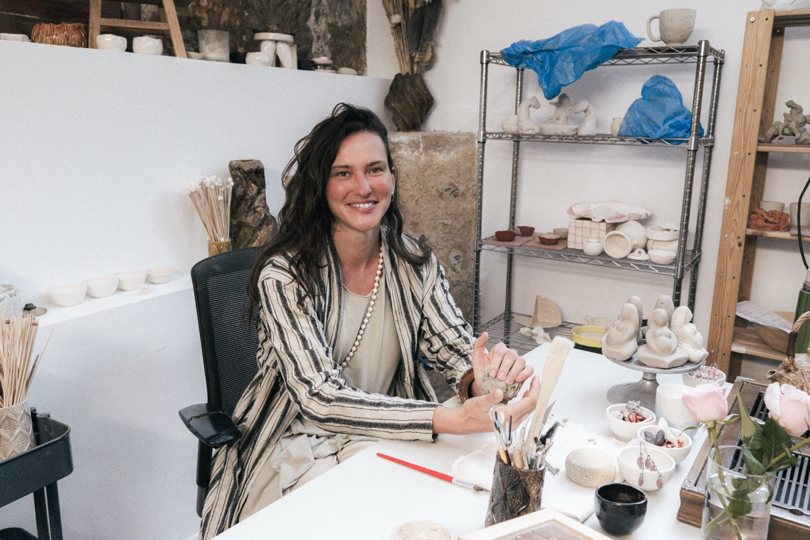
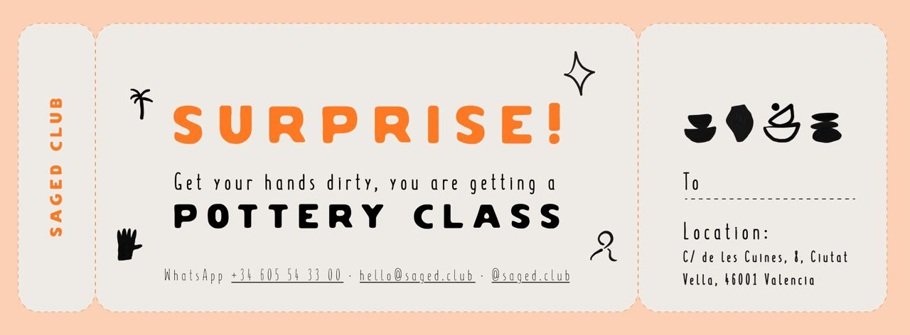
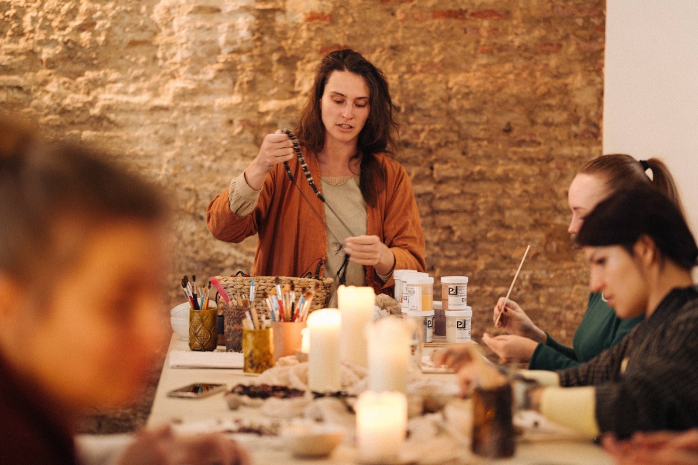
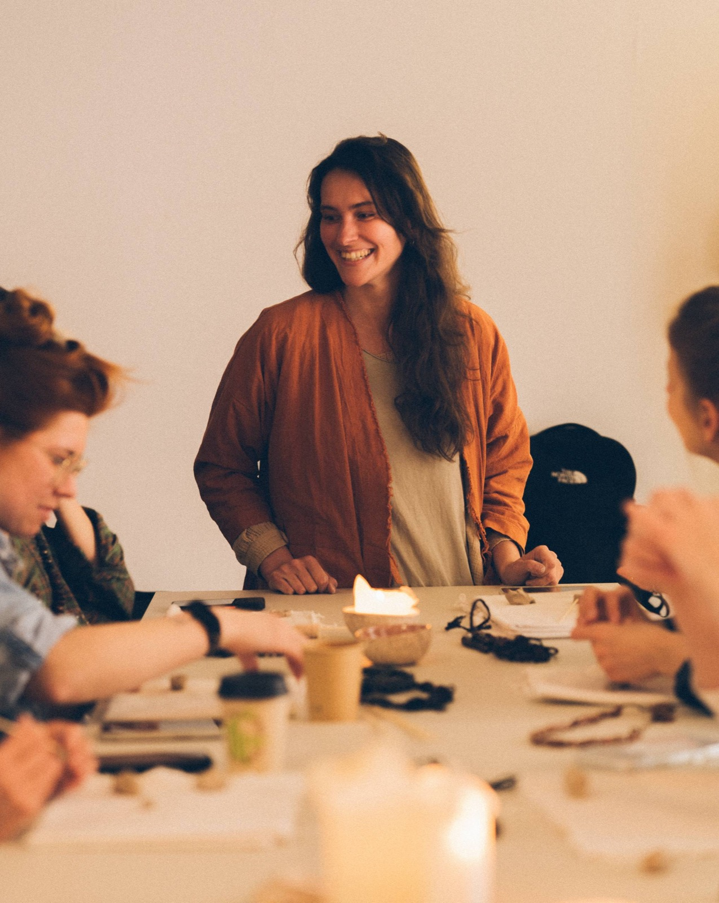
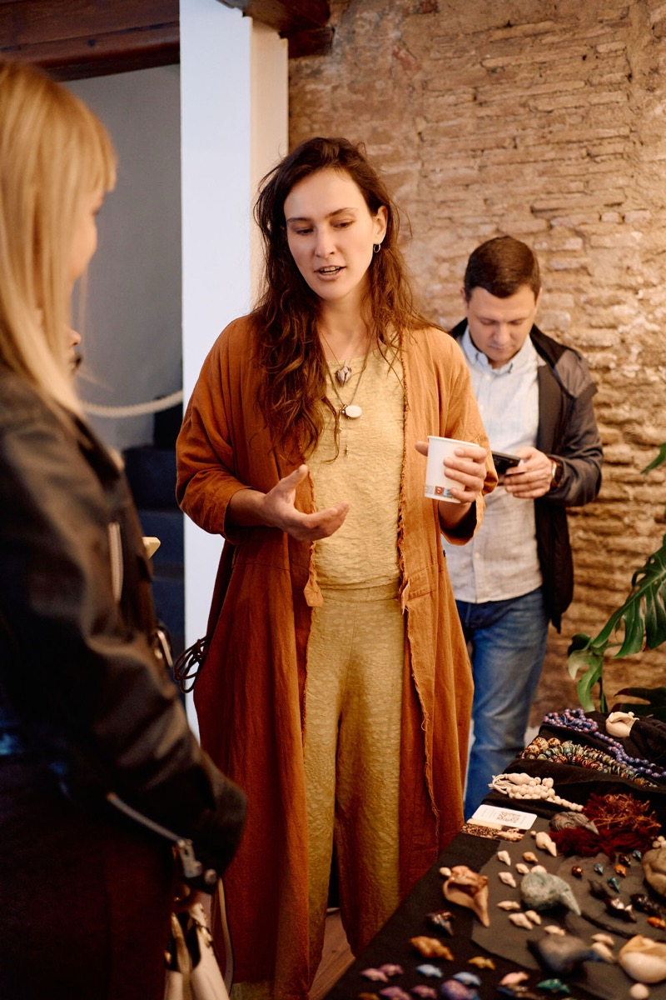
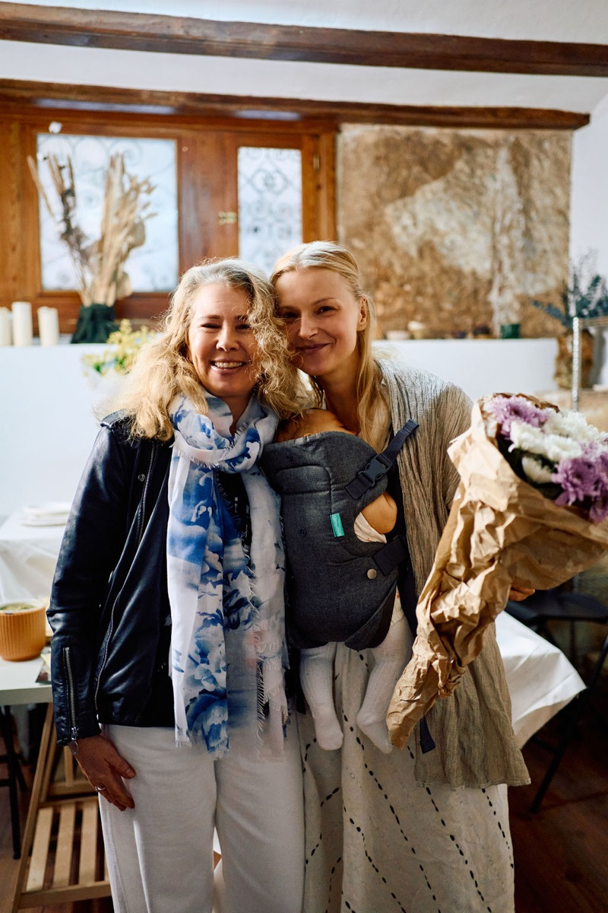
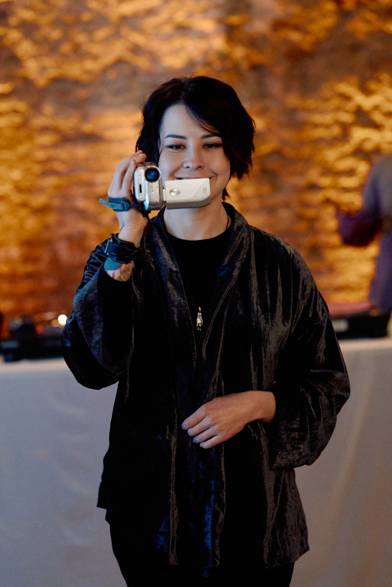
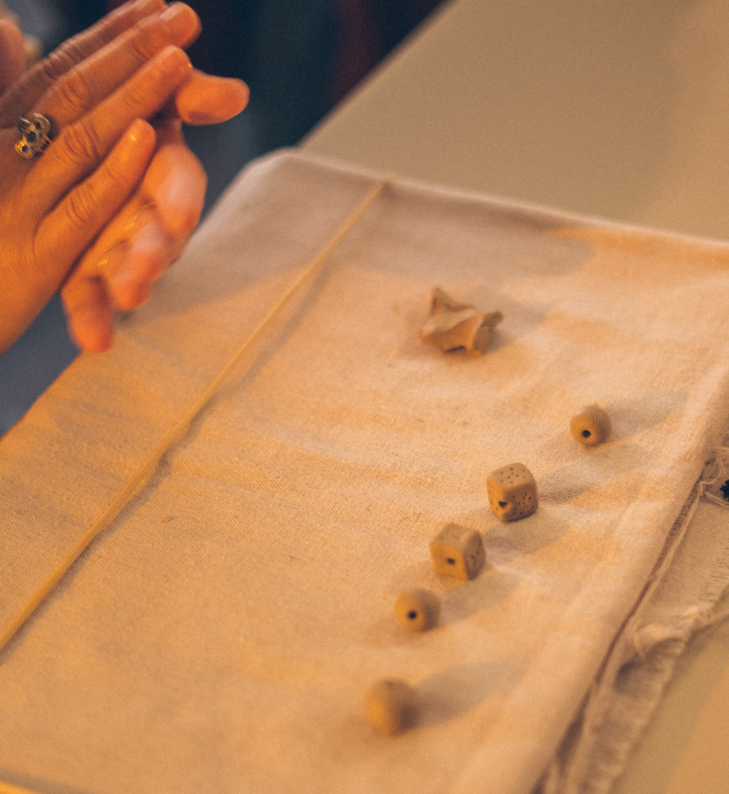

Каждый четверг · Старая Валенсия
Керамика с Корицей
Замедлиться, поработать руками с глиной и забрать домой свою керамику. Курс из двух встреч с недельным перерывом на обжиг.
Выбрать датуВстреча 1 — лепка
Два часа за столом с глиной. Сформируете руками своё керамическое изделие — что захотите: чашу, вазочку, подсвечник, фигурку, бусины. Корица помогает на каждом шаге.
Встреча 2 — глазурь
Через неделю возвращаетесь к своей работе после первого обжига: выбираете цвет, глазурь, декорируете. Студия делает второй обжиг.
Что заберёте
Своё керамическое изделие — обожжённое, покрытое глазурью, готовое жить с вами. Через две недели после второй встречи.

Ведущая
Кориця / Корица
Украинская керамистка, работает в Валенсии как керамический резидент студии @saged.club. Глина для неё — медленный, тактильный материал, который не терпит спешки.
Работает руками — лепит керамические изделия любого назначения: от вазочек и подсвечников до бусин и маленьких скульптур. Каждый курс — две встречи с недельным перерывом, потому что керамике нужно время: после лепки изделия должны просохнуть и устояться перед обжигом. Группы маленькие — 6 человек, чтобы каждому хватило внимания.
Также ведёт детский класс с элементами лепки и игры.
Корица говорит на украинском и русском. Занятия проходят в комфортном для вас языке.
Подарочный сертификат
Подарите время руками
Сертификат на мастер-класс — подарок, который остаётся. Для дня рождения, Нового года или просто так. Оформим именную карту в течение дня.
Смотреть сертификаты →
Как проходит занятие
Маленькая группа, тёплый свет, ваши руки в глине. Никакой спешки.


Что включено в 60 €
- Два занятия по 2 часа
- Глина (≈ 1 кг)
- Все инструменты и рабочее место
- Глазурь и цвет на выбор
- Оба обжига — биск и глазурный
- Чай и вода
- Готовое изделие через две недели
Или напишите в WhatsApp — ответим и забронируем вручную
Когда и где
Курс идёт каждый четверг. Записываетесь на два четверга подряд в одно и то же время.
Дни недели
Четверг + четверг
через неделю
Три слота на выбор
12:00 – 14:00
15:00 – 17:00
19:00 – 21:00
Начать можно с любого четверга
Например:
14 + 21 мая
21 + 28 мая
28 мая + 4 июня
и дальше каждую неделю
Группа
Маленькая
до 6 человек
C/ de les Cuines, 8 · Ciutat Vella · 46001 Валенсия
Открыть в Google Maps →
Прошлые встречи




Что говорят гости
Отзывы тех, кто уже провёл вечер с нами
«Уютное место, приятная атмосфера, чудесные люди.»
«Это просто подарок, что в Валенсии теперь есть такое пространство ❤️»
«Корица чудесная ❤️ Купили у неё по кулончику.»
Из Instagram
Посмотрите, как мы живём. Подпишитесь — @saged.club
Забронировать место
Не уверены? Напишите — расскажем больше, ответим на вопросы, забронируем вручную. Уверены — бронируйте сразу.
Подтверждаем после оплаты, можно отменить за 48 часов.
«Корица чудесная ❤️ Купили у неё по кулончику.»
Часто спрашивают
Нужен ли опыт?
Нет. Мы начинаем с нуля и идём в вашем темпе. Корица помогает каждому.
Почему две встречи, а не одна?
Между лепкой и глазурью глина должна высохнуть и пройти первый обжиг. Это занимает неделю. Так работает керамика — не ускоряем.
Можно ли начать с любого четверга?
Да. Курс идёт постоянно — каждый четверг. Записываетесь на два последовательных четверга (например, 14 + 21 мая, или 21 + 28 мая, или любая другая пара). Просто напишите нам удобную дату.
Что надеть?
То, что не жалко испачкать. Глина отмывается, но может оставить следы. Фартуки даём.
Что если пропущу вторую встречу?
Студия может покрыть глазурью за вас — но лучше прийти. Самое интересное — выбирать цвет и декор. Также можно перенести вторую встречу на следующий четверг.
Когда я заберу свою работу?
Через две недели после второй встречи. Заберёте в студии или доставим по Валенсии.
Можно ли с детьми?
Дети от 12 лет — да, в сопровождении родителя. Младше — напишите, найдём вариант.
Можно ли подарочный сертификат?
Да. Напишите в любой канал ниже, оформим именную карту в течение дня.
Можно ли на украинском?
Так. Корица та команда говорять українською. Українська версія сторінки →